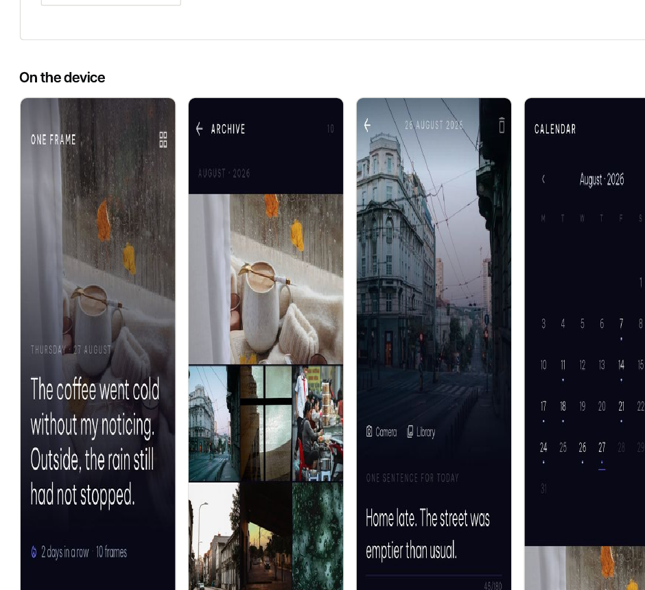

01
VERIFIED ON DEVICE · RELEASE VALIDATION · NOT PUBLISHED
One Frame
A local-first daily photo journal for Android. No account and no server: photographs and sentences stay on the phone, encrypted, unless the user explicitly exports a backup.
Problem
Journaling backlogs become homework; “private” often still means somebody else’s server.
Built
Domain/storage layers, UI, archive, encryption, bilingual copy, CI gates and Android release signing.
Technology
Flutter, Dart, SQLite, SQLCipher, AES-256-GCM, Android Keystore, local notifications.
Evidence
137 tests, clean static analysis, signed APK, device-level encrypted-storage verification.
